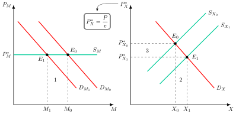
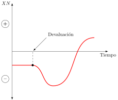
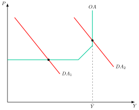
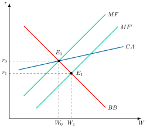
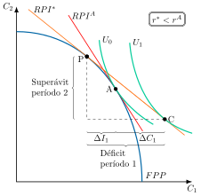

Apuntes para la oposición al Cuerpo de Diplomados Comerciales del Estado
20 Mecanismos de ajuste de la Balanza de Pagos. Especial referencia al enfoque intertemporal de la Balanza de Pagos. Análisis de sostenibilidad del déficit y de la deuda exterior.
Tema pendiente de revisión. Este tema está publicado pero aún no lo he revisado a fondo: puede contener erratas o partes por pulir.
20.1 Introducción  1'
1'
Según los últimos datos de la UNCTAD (2026), el comercio mundial alcanzó un récord de unos 35 billones de dólares en 2025, con un crecimiento en torno al 7,5 %. La propia UNCTAD advierte, sin embargo, de que el ritmo se moderará por el aumento de los costes comerciales y la incertidumbre persistente.
Para medir las transacciones económicas entre países, se utiliza la balanza de pagos, que presenta un equilibrio contable: \(CC+CK=CF\). Sin embargo, este equilibrio global puede ocultar desequilibrios significativos en sus sub-balanzas, especialmente en la cuenta corriente. Estos desequilibrios son motivo de preocupación, ya que pueden comprometer la estabilidad económica y financiera de los países1.
Las teorías de ajuste de la balanza de pagos han evolucionado desde modelos centrados en devaluaciones bajo tipos fijos (Bretton Woods) hacia enfoques que analizan déficits en contextos de alta movilidad de capitales y tipos flexibles, destacando la sostenibilidad intertemporal como criterio clave de corrección.
Así, estas teorías permiten comprender cómo los países enfrentan desequilibrios externos en función de sus estructuras económicas y del régimen cambiario vigente.
El objeto de esta exposición será analizar estos mecanismos de ajuste a través del siguiente esquema:
Enfoque clásico de Hume.
Teorías keynesianas, desarrolladas tras la Gran Depresión de los años 30 y los años dorados del capitalismo.
Enfoque de activos, desarrollado tras la liberalización financiera de los 70.
Enfoque intertemporal, desarrollado en los 80 y con un enfoque dinámico, y análisis de la sostenibilidad del déficit exterior.
20.2 Enfoque clásico: flujo-especie 1'
La primera aportación sobre los ajustes de los desequilibrios externos se debe a Hume (1752) con el llamado enfoque flujo-especie. Se trata de una teoría de ajuste automático de la balanza de pagos vía precios relativos que sirvió de base teórica para el patrón oro, según el cual los desequilibrios se corregirían por sí solos mediante los flujos de oro y las variaciones de los precios relativos.
Supuestos
Los supuestos del modelo son los siguientes:
Tipo de cambio fijo.
Verificación de la Teoría Cuantitativa del Dinero: \(M\cdot V=P\cdot Y\).
Flexibilidad de precios y cumplimiento de la Ley de Say, lo que implica un equilibrio de pleno empleo.
Patrón oro, caracterizado por la plena convertibilidad de la moneda en oro y la existencia de una relación fija entre la oferta de dinero y la cantidad de oro.
Competencia perfecta.
Cumplimiento de la Paridad de Poder Adquisitivo, \(PPA\), a largo plazo: \(P=P^{*}\cdot e\). A corto plazo los precios relativos pueden desviarse, y esa desviación es la que pone en marcha el ajuste.
Flujos de oro como ajuste
El mecanismo de ajuste se articula a través de los flujos de oro entre países:
Si se presenta un déficit, \(BC<0\), saldrán reservas de oro del país, por lo que se producirá una reducción de la oferta monetaria como contrapartida del déficit. Ello provocará una reducción del nivel de precios de la economía, por lo que esta será más competitiva frente al exterior. Sus exportaciones aumentan y sus importaciones disminuyen de tal forma que se corrige por completo el desequilibrio en la balanza de pagos.
Si se presenta un superávit, \(BC>0\), entrarán reservas de oro, por lo que aumentará la oferta monetaria y con ella el nivel de precios. La economía perderá competitividad frente al exterior, de modo que sus exportaciones disminuyen y sus importaciones aumentan hasta corregir por completo el superávit. Fue el caso de España tras el descubrimiento de América, donde la entrada de ingentes cantidades de oro y plata provocó una notable inflación y la consiguiente pérdida de competitividad.
Limitaciones
No obstante, el modelo flujo-especie plantea algunas limitaciones:
Escaso realismo de los supuestos.
Se basa en el patrón oro que, a su vez, tiene problemas como la cantidad limitada de oro en el largo plazo.
Se centra únicamente en el ajuste de la balanza comercial, sin considerar movimientos de capital.
20.3 Teorías keynesianas 7'
A partir de la Gran Depresión, los problemas externos sufridos por los miembros del sistema del patrón oro comienzan a poner en duda la teoría del ajuste automático del enfoque flujo-especie. Así pues, gana fuerza la idea de que los ajustes de balanza de pagos pueden requerir medidas explícitas de política económica –fundamentalmente, devaluaciones–, en línea con el auge de las ideas keynesianas.
Enfoque de las elasticidades
La primera teoría keynesiana es la del enfoque elasticidades, que surge ante la evidencia empírica de que bajo el tipo de cambio fijo, no existe un mecanismo de ajuste de la balanza de pagos. De esta manera, tomando como punto de partida la balanza comercial, analiza cuáles son las condiciones que han de verificarse para que una devaluación mejore la balanza comercial.
Este enfoque comienza con los trabajos de Marshall , que plantea que el tipo de cambio es el precio del mercado de divisas y estudia qué efectos tiene una devaluación. Por su parte, Lerner (1944) y Robinson (1937) analizan cómo afecta una devaluación a la balanza de pagos y bajo qué condiciones se produce mejora de esta como consecuencia de la devaluación.
Supuestos
El modelo que se va a analizar consta de los siguientes supuestos:
Economía keynesiana donde:
Precios –domésticos y extranjeros– y tipo de cambio fijos. Esto implica que una devaluación nominal conllevará la depreciación del tipo real, que se asocia a una mejora de la competitividad.
No existe pleno empleo, por lo que si una devaluación incrementa la demanda agregada se dispone de recursos ociosos para incrementar la producción.
Oferta monetaria se ajusta pasivamente, es decir, la política monetaria doméstica está aislada del resto del mundo, bien porque los tipos de interés domésticos no estén ligados a los internacionales porque existan barreras a la movilidad de capitales, bien porque se esterilicen completamente los movimientos de reservas.
Balanza comercial inicialmente en equilibrio, es decir, \(TB=p_{X}\cdot X-e\cdot p^{*}_{M}\cdot M=0\).
Cumplimiento de la Paridad de Poder Adquisitivo en la situación inicial: \(P=e\cdot P^{*}\).
País pequeño, pero con cierto poder en las exportaciones.
Gráficamente, en un plano de precios de importaciones, \(P_{M}\), y de importaciones, \(M\), como el de la Figura 20.1 se representa en el mercado de importaciones la demanda de importaciones, \(D_{M_{0}}\), con pendiente negativa respecto al precio interno a los bienes de importación y al precio mundial y la oferta de importaciones, \(S_{M}\), que será perfectamente elástica dado que el país es pequeño. Por el lado del mercado de exportaciones, en un plano de precios internacionales, \(P^{*}_{X}\), y exportaciones, \(X\), se representan la demanda de exportaciones, \(D_{X}\), con pendiente negativa dado el cierto poder de mercado sobre estas, y la oferta de exportaciones, \(S_{X_{0}}\), creciente respecto al precio internacional. Ambos mercados estarán en equilibrio, \(E_{0}\).

Devaluación del tipo de cambio
Ante una devaluación el tipo de cambio aumenta, teniendo un doble efecto sobre:
Precio de las importaciones: el precio de las importaciones aumenta en moneda nacional, lo que, en el plano en divisas, desplaza la demanda de importaciones hacia la izquierda, \(D_{M_{1}}\), hasta el nuevo equilibrio, \(E_{1}\). Habrá una mejora de la balanza comercial dada por el área 1, que es la reducción del gasto en importaciones.
Precio de las exportaciones: el precio de las exportaciones se reduce en moneda extranjera, expandiendo la oferta de exportaciones, lo que desplaza la curva hacia la derecha hasta el nuevo equilibrio, \(E_{1}\). Por un lado, el saldo de la balanza comercial mejora en el área 2. Por otro lado, también se reduce la cantidad de divisas recibidas por las exportaciones, reduciendo los ingresos por exportaciones y empeorando la balanza comercial en el área 3.
Efectos de una devaluación
Por lo tanto, de una devaluación se distinguen 2 efectos:
Efecto precio, negativo: cada unidad importada cuesta más en moneda nacional o, visto en divisas, cada unidad exportada se cobra más barata. Es el empeoramiento de la relación real de intercambio a volúmenes constantes.2
Efecto volumen, positivo, que disminuye las cantidades importadas y aumenta las cantidades exportadas.
Condición Marshall-Lerner
Así, la balanza comercial mejorará si el efecto volumen es mayor que el efecto precio. Este resultado se alcanzará cuando las elasticidades de las exportaciones e importaciones con respecto al tipo de cambio sean altas, cumpliéndose la condición de Marshall-Lerner, es decir, que la suma del valor absoluto de dichas elasticidades sea superior a la unidad34: \[\left|\varepsilon_{Xe}\right|+\left|\varepsilon_{Me}\right|>1 \tag{20.1}\]
Limitaciones
No obstante, pese a que la condición Marshall-Lerner supone una referencia fundamental en el estudio de los mecanismos de ajuste de la balanza de pagos, plantea algunas limitaciones:
Paradoja de las elasticidades: las contrastaciones empíricas llevadas a cabo para los años 30-40 obtuvieron valores muy bajos para las elasticidades de importaciones y exportaciones, lo que se conoció como pesimismo de las elasticidades. Esto apoyaba la teoría de las elasticidades de que solo se podía mejorar la balanza comercial con elasticidades altas, pero daba lugar a la llamada “paradoja de las elasticidades”: si con elasticidades bajas una devaluación empeora la balanza comercial, una apreciación la mejoraría, una recomendación de política difícil de aceptar.
La curva J. Una devaluación podría mejorar la balanza comercial a largo plazo, pero podría empeorarla en el corto plazo, dado que el ajuste de los volúmenes lleva tiempo mientras que el de los precios es inmediato. De esta forma, al principio la balanza comercial empeorará, como se observa en la Figura 20.2.5
Pass-through limitado. Es probable que, ante una devaluación, los exportadores no estén dispuestos a dejar que sus productos se abaraten en términos de moneda extranjera, por lo que pueden acabar subiendo los precios de sus productos 6.
Equilibrio parcial. Este enfoque no tiene en cuenta los efectos que tiene la mejora de la balanza comercial sobre el resto de la economía.
Estos efectos sobre el resto de la economía los recoge el enfoque del multiplicador keynesiano.

Enfoque del multiplicador keynesiano del comercio exterior
El enfoque del multiplicador keynesiano del comercio exterior –también denominado enfoque renta–, desarrollado por Harrod (1933) y Machlup (1943), ajusta el enfoque de las elasticidades matizando sus conclusiones al desarrollar un análisis de equilibrio general.
Así, considera el efecto que la mejora de la balanza comercial por la devaluación tiene sobre la renta a través del multiplicador keynesiano del comercio exterior: la mejora de la balanza comercial aumenta la renta, lo que aumenta la demanda de importaciones, repercutiendo negativamente sobre la balanza comercial.
Analíticamente, el efecto de un aumento de las exportaciones autónomas sobre la balanza comercial es el propio aumento menos el aumento de las importaciones inducido por la mayor renta, que es \(m/\left(s+m\right)\). El efecto neto es, por tanto, la propensión marginal a ahorrar, \(s\), dividida entre la suma de esta y la propensión marginal a importar, \(m\): \[\dfrac{\partial BC}{\partial X}=1-m\cdot\dfrac{\partial Y}{\partial X}=1-m\cdot\dfrac{1}{1-c+m}=1-\dfrac{m}{s+m}=\dfrac{s}{s+m} \tag{20.2}\]
Por lo tanto, un aumento de las exportaciones autónomas tendrá un efecto positivo sobre la balanza comercial, pero esta expansión será menor que el aumento inicial de dichas exportaciones autónomas (\(s/\left(s+m\right)<1\)) porque provoca un aumento de la renta y, con esta, un aumento de las importaciones.
Así, la mejora de la balanza comercial será mayor cuanto mayor sea la propensión marginal a ahorrar, \(s\), y cuanto menor sea la propensión marginal a importar, \(m\).
Limitaciones
Sin embargo, el enfoque renta también plantea limitaciones, ya que:
No considera el efecto de la devaluación sobre el nivel general de precios y sobre los precios relativos de las exportaciones y las importaciones.
No tiene en cuenta el lado de la oferta de la economía.
Para analizar estas cuestiones, a continuación se presenta el enfoque absorción.7
Enfoque absorción
La mayor parte de la literatura sobre el papel de las elasticidades en el ajuste de la balanza de pagos apareció con motivo de la Gran Depresión de los años 30, momento en el que los factores productivos estaban disponibles en abundancia. A su vez, el enfoque del multiplicador keynesiano asume que hay desempleo, es decir, recursos ociosos, por lo que es posible aumentar la producción/renta.
Por consiguiente, la cuestión que surge es si estas explicaciones y sus conclusiones son aplicables también a situaciones con alto empleo de recursos para enfatizar la función de la renta y el gasto. Dicha pregunta es planteada por Sidney Alexander (1952) en el llamado enfoque absorción, desarrollado en la “edad dorada del capitalismo” (1945-1973), donde cobra más realismo el supuesto de pleno empleo de los recursos.
Supuestos
Los supuestos del modelo, similares a los de la economía keynesiana de la que se partía antes, son los siguientes:
País pequeño, aunque con cierto poder en las exportaciones.
En primer lugar, se considera que existen recursos ociosos y luego pleno empleo.
Análisis
Partiendo de la ecuación de la demanda agregada que viene dada por la suma del consumo, \(C\), la inversión, \(I\), el gasto público, \(G\), y el saldo de la balanza de bienes y servicios, \(X-M\), \[Y=C+I+G+X-M \tag{20.3}\] la absorción interna, \(A\), se define como la suma del consumo, la inversión y el gasto público \[A=C+I+G \tag{20.4}\] que a su vez se definirá por un componente autónomo, \(A_{0}\), y por la propensión marginal a absorber, \(c\), que multiplica la renta y es la suma de las propensiones marginales a consumir y a invertir (Alexander 1952, 266) \[A=A_{0}+c\cdot Y \tag{20.5}\]
Así, despejando el saldo de la balanza de bienes y servicios, dicho saldo será igual al nivel de producción menos el nivel de absorción8 \[BC=Y-A \tag{20.6}\]
En este contexto, Alexander estudió el efecto de una devaluación dependiendo de si había pleno empleo o no. Gráficamente, en un plano de precios, \(P\), y producción, \(Y\), como el de la Figura 20.3 se observa que, en un primer momento, la oferta, OA, presenta un tramo horizontal, indicando que dada la disponibilidad de recursos es posible aumentar la producción sin aumento de precios. Sin embargo, cuando se llega al pleno empleo, \(\bar{Y}\), cualquier impulso de la demanda solo generará un alza de precios.

De esta forma:
Sin pleno empleo: la demanda agregada corta a la oferta en el tramo horizontal, \(DA_{1}\), por lo que una devaluación va a aumentar la renta, al mejorar las exportaciones netas, desplazando la demanda agregada hacia la derecha cortando a la oferta agregada en su tramo horizontal. Además, si se asume que la propensión marginal a absorber es menor que 1, el nivel de renta aumentaría en mayor medida que el nivel de absorción, lo que mejoraría el saldo de la balanza comercial.
Con pleno empleo: la demanda agregada corta a la oferta en el tramo vertical, \(DA_{2}\), por lo que una devaluación no va a aumentar la renta, sino que aumentarán los precios. Esto se debe a que el aumento de las exportaciones no se satisface con los recursos disponibles, provocando un aumento en los precios y compensando el efecto de una devaluación sobre las exportaciones. Por ello, la única forma de mejorar el saldo exterior es que el aumento de los precios disminuya la absorción.
Canales de reducción de la absorción
La absorción cambia por dos vías: la inducida por la renta, que depende de la propensión marginal a absorber, y la directa, que la devaluación provoca a renta dada.
Alexander (1952, 271-74) distingue cuatro efectos directos de la devaluación sobre la absorción:
Efecto saldos de caja:
Efecto Keynes: al aumentar los precios, y si la oferta monetaria se mantiene constante, los saldos de dinero reales disminuirán, los agentes venderán bonos para obtener liquidez, lo que presionará al alza los tipos de interés, desincentivando la inversión.
Efecto Pigou: al aumentar los precios, y si los individuos desean mantener constante el valor real de sus saldos monetarios, deberán acumular más dinero y gastar menos.
Redistribución de la renta:
No indexación de los salarios: al aumentar los precios, y si no aumentan proporcionalmente los salarios, tendrá lugar una redistribución de renta real de los trabajadores a los capitalistas. Dado que los últimos suelen ser más ricos, tendrán una mayor tasa de ahorro, por lo que el consumo disminuirá y con él la absorción. Alexander advierte, no obstante, que la absorción incluye también la inversión, por lo que un desplazamiento hacia los beneficios no reduce necesariamente la absorción.
Rémora fiscal: si la progresividad fiscal no está indexada a la inflación, la presión fiscal aumentará (progresividad en frío) y la renta se desplazará hacia el Estado, cuya propensión marginal a absorber es baja. Si el gasto público se mantiene constante, la absorción total disminuirá.
Ilusión monetaria: si los agentes prestan más atención a los precios que a sus rentas monetarias, consumen menos a precios más altos aunque su renta monetaria haya subido en la misma proporción. Su signo es, sin embargo, incierto.
Otros efectos: las expectativas de nuevas subidas de precios aumentan la absorción a corto plazo, y el encarecimiento de los bienes de inversión importados la reduce.
Alexander concluye que muchos de estos efectos son transitorios y no proporcionales, y que con pleno empleo es probable que sean débiles.
Implicaciones de política económica
En suma, en un contexto de pleno empleo, una devaluación mejorará el saldo exterior solo si reduce la absorción. De ahí que a menudo se exija que una devaluación vaya acompañada de políticas de demanda restrictivas que permitan reducir la absorción9. Esta idea ha sido aplicada en los programas de ajuste del FMI.
Críticas
Sin embargo, este enfoque no presta atención a los flujos financieros como contrapartida de la balanza comercial. Al fin y al cabo, este enfoque y los anteriores se desarrollaron en un contexto en el que los flujos de capitales apenas estaban comenzando a crecer.
No obstante, con el paso del tiempo, estos flujos se vuelven tan importantes que surgirán teorías que dan más importancia a estos aspectos financieros: el enfoque de activos.
20.4 Enfoque de activos 3'
Hasta los años 70 era comúnmente aceptado que un desequilibrio exterior solía tener siempre su origen en la cuenta corriente. Sin embargo, con la progresiva liberalización de los movimientos internacionales de capitales desde los años 70, coincidiendo con la caída del sistema de Bretton Woods10, cada vez se comienza a prestar más atención a estos como el determinante profundo de los desequilibrios.
Esto es lo que se conoce como el enfoque de la balanza de pagos cabeza abajo, que consiste en darle la vuelta a la balanza de pagos y, en vez de fijarse en la cuenta corriente y tomar sus efectos en la cuenta financiera como consecuencias, hacer lo inverso: señalar que los desequilibrios se deben fundamentalmente a factores financieros, y que los desequilibrios de las otras balanzas son simplemente su consecuencia.
Se analizarán dos modelos dentro de este enfoque:
Modelo monetario: parte de considerar el ajuste de la balanza de pagos como un fenómeno monetario, de forma que los desequilibrios se corrigen a largo plazo.
Modelo de cartera: parte de tener en cuenta los desequilibrios de los mercados de todos los activos financieros.
Modelo monetario
Este modelo parte de considerar el ajuste de la balanza de pagos como un fenómeno monetario –actualizando así el enfoque de Hume–, de forma que los desequilibrios se corrigen a largo plazo. Así, destaca el papel del dinero como un stock y su relación con los flujos financieros, que se producen al tratar de ajustar los stocks deseados de dinero y de activos.
En particular, existe un nexo entre los flujos de reservas y la política monetaria, ya que la cantidad de dinero se va a ver modificada por los movimientos de reservas y del crédito doméstico. El enfoque monetario de la balanza de pagos es desarrollado por el FMI (Polak 1957) y la Escuela de Chicago, con Mundell (1971), Mussa (1974) y Johnson (1972).
Supuestos
En este sentido se analizará el modelo de Johnson (1972), cuyos supuestos de partida son los siguientes:
Economía en pleno empleo, \(Y=\bar{Y}\), por lo que la renta es constante.
Tipo de cambio fijo.
Se verifica PPA.
Perfecta movilidad de capitales, por lo que el tipo de interés doméstico es igual al tipo de interés mundial: \(r=r^{*}\).
La oferta monetaria, \(M^{S}\), es igual a la suma de las reservas, \(R\), y el crédito interno, \(CI\): \[M^{S}=R+CI \tag{20.7}\]
La demanda de dinero, \(M^{D}\), depende positivamente de los precios, \(P\), y de la renta, \(Y\), y negativamente de los tipos de interés, \(r\): \[M^{D}=M^{D}(\underset{+}{P},\underset{+}{Y},\underset{-}{r}) \tag{20.8}\] y al ser factores exógenos significa que la demanda está dada.
Ajuste
Será el proceso de vaciado del mercado de dinero lo que lleve al ajuste, por lo que en equilibrio la oferta y la demanda de dinero se igualan: \[M^{S}=M^{D}\longrightarrow CI+R=M^{D} \tag{20.9}\] y dado que con tipo de cambio fijo las reservas serán la partida acomodante, entonces el desequilibrio de la balanza de pagos vendrá dado por la variación de reservas, es decir, por la diferencia entre la variación de la demanda de dinero y la del crédito interno11: \[BP=\Delta R=\Delta M^{D}-\Delta CI \tag{20.10}\]
En este contexto, partiendo de una situación de equilibrio, si aumenta la oferta monetaria, aumentarán los saldos reales ya que los precios son fijos, produciendo un exceso de oferta de los saldos reales, que los individuos utilizarán en la adquisición de bienes y activos extranjeros ya que la economía doméstica se encuentra en pleno empleo de recursos. De esta forma, habrá una salida de divisas. En la ecuación de equilibrio de la balanza de pagos ( 20.10) aumentará el crédito interno, \(\uparrow\Delta CI\), y disminuirán como consecuencia las reservas, \(\downarrow\Delta R\).
Conclusiones
Las conclusiones del modelo monetario son:
Los desequilibrios de la balanza de pagos se generan por los desequilibrios en el mercado monetario: excesos de oferta de dinero (déficit) o de demanda de dinero (superávit).
El ajuste de la balanza de pagos es automático, los desequilibrios de la balanza de pagos son transitorios y se corregirán de forma automática12.
La política monetaria es ineficaz sobre la oferta monetaria, que viene determinada por la demanda de dinero, y solo altera su composición entre crédito interno y reservas. Una expansión del crédito se traduce en pérdida de reservas. Es la manifestación de la trinidad imposible: con tipo de cambio fijo y libre movilidad de capitales no cabe una política monetaria autónoma. Sin embargo, una política monetaria restrictiva puede ser clave en una situación límite de agotamiento de reservas.
Limitaciones
No obstante, este enfoque plantea limitaciones, como las siguientes:
El cumplimiento, incluso a corto plazo, de la paridad de poder adquisitivo13.
Renta constante y pleno empleo es poco realista.
La posibilidad de que el saldo por cuenta corriente se compense vía cuenta financiera, sin que se produzcan variaciones de reservas.
La igualdad entre el tipo de interés doméstico y externo supone que existe perfecta sustituibilidad entre activos.
El enfoque de cartera tratará de superar estas limitaciones.
Modelo de cartera
A diferencia del modelo anterior, en el enfoque de cartera los activos extranjeros son sustitutivos imperfectos de los nacionales debido a factores como la existencia de restricciones a su movilidad, información imperfecta, riesgo cambiario, político, etc.
Supuestos
El modelo se basa en:
Una economía pequeña, de forma que el tipo de interés mundial, \(r^{*}\), está dado, en la que existen precios y tipo de cambio, \(e\), fijos.
Se asume sustituibilidad imperfecta entre activos debido al riesgo cambiario, las imperfecciones de la información o las limitaciones a la movilidad de activos.
Tres tipos de activos: dinero, \(M\), sin rendimiento; bonos domésticos, \(B\), con rendimiento \(r\); y bonos extranjeros, \(F\), con rendimiento \(r^{*}\). Solamente el dinero y los bonos extranjeros son comercializables.
La riqueza, \(W\), de los agentes se compone de la suma de estos tres activos de forma que, denominados en moneda nacional14: \[W=M+B+e\cdot F \tag{20.11}\] donde la demanda de cada uno de estos activos dependerá positivamente del rendimiento que ofrecen y de la riqueza total y negativamente del rendimiento de los activos alternativos.
Análisis gráfico
Gráficamente, en un plano de tipos de interés, \(r\), y riqueza, \(W\), como el de la Figura 20.4, se representa:
La curva \(MF\) que contiene los activos comercializables –el dinero y los bonos extranjeros–, con pendiente positiva ya que si aumenta la riqueza aumentará la demanda de dinero, aumentando los tipos de interés.
La curva \(BB\) representa el mercado de bonos nacionales, con pendiente negativa ya que al aumentar la riqueza aumentará la demanda de bonos, disminuyendo los tipos de interés.
La curva \(CA\) representa el equilibrio en la cuenta corriente, con pendiente positiva dado que aumentos en el tipo de interés reducirán el gasto, mejorando el saldo, por lo que será necesario que aumente la riqueza para mantener el equilibrio15.
Para analizar el ajuste de la cuenta corriente, se parte de una situación de equilibrio \(E_{0}\) para un tipo de interés y riqueza asociados:
Así, un aumento de la oferta monetaria desplazará la curva \(MF\) hacia la derecha, hasta un nuevo equilibrio como \(E_{1}\) con déficit por cuenta corriente, dado que está por debajo de la \(CA\).
Sin embargo, dado que ha disminuido el tipo de interés el mercado doméstico será menos atractivo, por lo que saldrán capitales, es decir, se reajustan automáticamente las carteras, por lo que la curva \(MF\) se desplazará hacia la izquierda hasta volver al equilibrio inicial \(E_{0}\). De esta manera, no es necesario ningún tipo de intervención.
En suma, a corto plazo, la cuenta corriente puede no estar en equilibrio. Sin embargo, a largo plazo la cuenta corriente quedará determinada por el nivel de renta y deberá estar en equilibrio.

Implicaciones de política económica
Por tanto, este modelo ofrece una mayor posibilidad de intervención de las autoridades públicas, tanto en lo que concierne a la política monetaria como a la política fiscal (una reducción de bonos daría lugar a un desplazamiento de la curva \(BB\)). No obstante, estas posibilidades de intervención estarán limitadas al corto plazo. En el largo plazo, el equilibrio estará asociado al nivel de renta que vacíe la cuenta. Estos modelos siguen apoyándose en relaciones agregadas, por lo que el enfoque intertemporal los sustituye por el comportamiento optimizador de los agentes.
20.5 Enfoque intertemporal 7'30"
El enfoque intertemporal, desarrollado a comienzos de los años 80 a partir de Sachs (1981) y sistematizado después por Obstfeld y Rogoff (1996), contempla la cuenta corriente como el resultado de las decisiones dinámicas de ahorro e inversión bajo un comportamiento forward-looking16.
Este enfoque contrasta con los enfoques expuestos previamente y viene motivado principalmente por la crítica de Lucas (1976), según la cual el estudio de las relaciones macroeconómicas basadas en identidades nacionales y datos agregados podía llevar a error, puesto que no tenía en cuenta los comportamientos optimizadores de los agentes a partir de los cuales surgían estas relaciones agregadas.
Por ello, este enfoque estará basado en la microfundamentación, por lo que se estudiarán los flujos internacionales de bienes y de capitales a partir de las decisiones de consumo, producción e inversión de los agentes microeconómicos.
A su vez, busca dar una respuesta más satisfactoria a los desequilibrios de las CC de numerosas economías durante las crisis del petróleo de 1973-74 y de 1979-80, ya que las teorías keynesianas no aportaban explicaciones completas a estos episodios.
En definitiva, este enfoque busca ser la síntesis de los enfoques de elasticidades y los enfoques de absorción, explicando que los desequilibrios en la CC y en la CF son el resultado de las decisiones de optimización de consumo, ahorro e inversión de los agentes privados y públicos17.
El modelo de Obstfeld y Rogoff (1996) permite obtener el nivel de déficit o superávit óptimo de cada momento, comprender por qué surge y estudiar la sostenibilidad del déficit exterior.
Modelo
Los supuestos del modelo de Obstfeld y Rogoff (1996, 14-21) son los siguientes:
Un único factor productivo que es el capital, que se acumula con las decisiones de inversión pasadas y no se deprecia. \[\begin{aligned} K_{t+1}=K_{t}+I_{t} \end{aligned} \tag{20.12}\]
Economía pequeña y abierta comercial y financieramente al exterior, es decir, \(r=r^{*}\).
Un único bien18 (para evitar consideraciones de precios relativos), que se produce con una función de producción neoclásica de buen comportamiento. \[Y_{t}=A\cdot f\left(K_{t}\right) \tag{20.13}\]
Horizonte temporal infinito, aunque se analizará por simplicidad la economía con 2 periodos de tiempo: \(t=\left\{ 1,2\right\}\)
Un único agente representativo, que toma las decisiones intertemporales de consumo e inversión con el objetivo de maximizar una función de utilidad separable, aditiva, creciente y cóncava. \[U=\sum\limits_{t=0}^{\infty}\beta^{t}\cdot u\left(C_{t}\right),\quad0<\beta<1 \tag{20.14}\] donde \(\beta\) es el factor de descuento entre 0 y 1
La restricción presupuestaria queda representada por la cuenta corriente del país, \(CC_{t}\), que es la variación de sus activos exteriores netos, \(B\) (positivos si es acreedor y negativos si es deudor), y depende de la producción, \(Y\), el consumo, \(C\), la inversión, \(I\), y el gasto público, \(G\): \[CC_{t}=B_{t+1}-B_{t}=Y_{t}+r\cdot B_{t}-C_{t}-I_{t}-G_{t}\] y que aplicando la inducción hacia delante se obtiene la restricción presupuestaria intertemporal \[-\left(1+r\right)B_{0}=\sum\limits_{t=0}^{\infty}\left(\dfrac{1}{1+r}\right)^{t}\left(Y_{t}-C_{t}-I_{t}-G_{t}\right)\] esta ecuación indica que la deuda exterior neta inicial19, con sus intereses, tendrá que ser igual al valor presente de los saldos comerciales futuros (donde \(Y-C-I-G\) son las exportaciones netas, \(TB\)).
Por tanto, el programa de maximización para 2 periodos estará definido por la utilidad en el consumo en el periodo 1, \(u\left(C_{1}\right)\), más el factor de descuento, \(\beta\), que multiplica la utilidad del consumo en el periodo 2, \(u\left(C_{2}\right)\): \[\underset{\left\{ C_{1},C_{2}\right\} }{\max}\,\,U=u\left(C_{1}\right)+\beta\cdot u\left(C_{2}\right),\,\,\,\,0<\beta<1 \tag{20.15}\] sujeto a tres restricciones:
Restricción presupuestaria. Con activos exteriores iniciales nulos, \(B_{1}=0\), y sin activos al final del segundo periodo, \(B_{3}=0\), la cuenta corriente de cada periodo implica \[\begin{aligned}B_{2} & =Y_{1}-C_{1}-I_{1}-G_{1}\\[6pt] -B_{2} & =Y_{2}+r\cdot B_{2}-C_{2}-I_{2}-G_{2} \end{aligned} \tag{20.16}\] Eliminando \(B_{2}\), se obtiene la restricción presupuestaria intertemporal \[C_{1}+I_{1}+\dfrac{C_{2}+I_{2}}{1+r}=Y_{1}-G_{1}+\dfrac{Y_{2}-G_{2}}{1+r} \tag{20.17}\]
Restricción de producción: \(Y_{t}=A\cdot f\left(K_{t}\right)\), con \(K_{1}\) dado por la historia.
Restricción de inversión: \(K_{t+1}=K_{t}+I_{t}\). Como el capital que queda al final del segundo periodo se consume, \(K_{3}=0\) y, por tanto, \(I_{2}=-K_{2}\).
En horizonte infinito, además, el problema está sujeto a la condición de no-Ponzi, de viabilidad, que impide que el país se endeude indefinidamente para pagar sus deudas anteriores y exige que el valor presente de sus activos exteriores netos no sea negativo en el límite, y a la de transversalidad, de optimalidad, que exige que ese valor sea exactamente cero, porque al país no le conviene dejar riqueza sin consumir:20 \[\lim_{T\rightarrow\infty}\left(\dfrac{1}{1+r}\right)^{T}B_{t+T+1}=0 \tag{20.18}\]
Las CPO del problema establecen:
La ecuación de consumo óptimo o ecuación de Euler, que recoge la senda intertemporal de consumo, que dependerá del tipo de interés y del factor de descuento: \[\dfrac{u^{'}\left(C_{1}\right)}{u^{'}\left(C_{2}\right)}=\beta\cdot\left(1+r\right) \tag{20.19}\] Se consumirá más en el presente cuanto menor sea el factor de descuento, es decir, cuanto más impaciente sea el agente, y, por el efecto sustitución, cuanto menor sea el tipo de interés.
La condición de inversión óptima, que indica que el nivel de inversión óptimo será aquel en el que la productividad marginal del stock de capital final sea igual al tipo de interés \[PMg_{K_{2}}=r \tag{20.20}\]
Por tanto, se cumple el teorema de separación de Fisher: la decisión de inversión es independiente de las preferencias de consumo, ya que se fija donde la productividad marginal del capital iguala al tipo de interés, y la de consumo se toma después, dada la riqueza que genera esa inversión. Asimismo, estas dos condiciones determinarán el saldo de la cuenta corriente y, por consiguiente, también el de la cuenta financiera, es decir, los movimientos internacionales de capital necesarios para mantener el equilibrio intertemporal de la balanza de pagos.
Análisis gráfico
Gráficamente, en un plano de consumo en 1, \(C_{1}\), y consumo en 2,\(C_{2}\), como el de la Figura 20.5, se representa la frontera de posibilidades de producción, \(FPP\), que representa el consumo máximo en el periodo 2 para cada nivel de consumo en 1. El país consumirá y producirá en un punto como \(A\) de autarquía, donde todo lo que el país consume es producido internamente, \(C=P\)21. Además, en este punto será tangente la curva de indiferencia más alejada del origen, \(U_{0}\), y la \(FPP\), coincidiendo con el punto de tangencia de la recta presupuestaria, \(RPI^{A}\), cuya pendiente es \(1+r\).

Si el país se abre al comercio internacional y permite la libre movilidad internacional de capitales se enfrentará a un tipo de interés real internacional menor que el nacional, \(r^{*}<r\) – porque, por ejemplo, el capital es escaso en el país–. Así, el país se enfrentará a una recta presupuestaria con menor pendiente –dado que \(1+r^{*}<1+r\)–, que le permitirá separar su producción en \(P\) y su consumo en \(C\) accediendo a una curva de indiferencia, \(U_{1}\), más alejada del origen.
Dado que el tipo de interés del país es mayor que el del resto del mundo, entrarán capitales:
En el primer periodo, la economía presenta un déficit por cuenta corriente, el cual se mide por la distancia horizontal entre lo que se consume, \(C\), y la producción destinada a consumo, \(P\). Por otro lado, al abrir la economía, la distancia horizontal entre los puntos \(P\) y \(A\) representa el incremento de la inversión en el periodo 1, \(\Delta I_{1}\), y la distancia horizontal entre los puntos \(A\) y \(C\) representa el incremento del consumo en el periodo 1, \(\Delta C_{1}\). Dicho déficit corriente, \(\downarrow CC\), se corresponde con un déficit en la cuenta financiera, \(\downarrow CF\), vía entrada de capitales, es decir, aumento de los pasivos financieros de la economía.
En el segundo periodo, el país presentará un superávit por cuenta corriente, que se medirá por la distancia vertical entre los puntos \(P\) y \(C\). Este superávit por cuenta corriente, \(\uparrow CC\), se corresponderá con un superávit en la cuenta financiera, \(\uparrow CF\), vía salida de capitales, es decir, disminución de los pasivos financieros de la economía22.
Resultado
El resultado es un mayor nivel de utilidad, que se alcanza gracias a:
La ganancia derivada de la posibilidad de suavizar el consumo.
La ganancia derivada del cambio en la producción. Aumento de la eficiencia de las decisiones de inversión (efecto asignación).
Por tanto, un déficit por cuenta corriente no es negativo siempre y cuando se puedan aprovechar las mejores posibilidades de inversión y una mejor eficiencia asignativa de los recursos.
Además, la dirección y magnitud de los movimientos internacionales de capitales, tanto de inversión en cartera como directa, dependen, según este modelo, exclusivamente de los diferenciales en los tipos de interés, es decir, de la rentabilidad: los países con tipos de interés mayores, serán receptores de capital, y viceversa23.
Problemas: sostenibilidad
Ahora bien, dicha ganancia de bienestar depende de si el superávit generado en el segundo periodo podrá financiar el déficit generado en el primer periodo, cuestión que se analiza a continuación.
Análisis de sostenibilidad de déficit exterior
El modelo anterior ofrece un marco de referencia para estudiar la sostenibilidad de la deuda exterior y permite responder a la siguiente pregunta: ¿es posible sostener de manera permanente déficits por cuenta corriente?
Un déficit exterior es sostenible si el país puede seguir atendiendo el servicio de su deuda exterior sin que haga falta una corrección futura de su balance de ingresos y gastos que resulte irrealmente grande (Daseking 2002). La sostenibilidad se refiere así a la solvencia. Un problema de liquidez, en cambio, es transitorio y puede resolverse con financiación o refinanciación a corto plazo, sin necesidad de reestructurar la deuda.
Para estudiar esta cuestión, se reorganiza la restricción presupuestaria intertemporal: \[-\left(1+r\right)B_{0}=\sum\limits_{t=0}^{\infty}\left(\dfrac{1}{1+r}\right)^{t}TB_{t} \tag{20.21}\] donde \(TB\) representa la balanza de bienes y servicios. Los activos exteriores netos, \(B\), son negativos cuando el país es deudor, de modo que \(-B\) es su deuda exterior neta. Esta ecuación es la condición de solvencia: el valor presente de los superávits comerciales futuros debe ser igual a la deuda exterior inicial, con sus intereses.
Además, se supondrá que la economía crece a una tasa constante, \(g\), al igual que la deuda \[\dfrac{Y_{t+1}}{Y_{t}}=\dfrac{B_{t+1}}{B_{t}}=1+g \tag{20.22}\]
Así, la ratio entre la deuda exterior y el PIB permanece constante cuando los activos exteriores netos crecen a la misma tasa que el PIB, es decir, cuando la cuenta corriente, que es su variación, cumple \[CC_{t}=B_{t+1}-B_{t}=g\cdot B_{t}=r\cdot B_{t}+TB_{t} \tag{20.23}\] lo que implica que \[\dfrac{TB_{t}}{Y_{t}}=\dfrac{-\left(r-g\right)\cdot B_{t}}{Y_{t}} \tag{20.24}\] es decir, que para que la economía pueda mantener una ratio deuda externa/PIB constante, \(-B/Y\), el país deberá pagar la diferencia entre el tipo de interés y el crecimiento a través de la balanza comercial.24
Concretamente, esta expresión muestra que para mantener una ratio deuda externa/PIB constante, el compromiso de recursos que debe hacer el país, es decir, el superávit comercial necesario \(\left(TB/Y\right)\), debe ser igual al exceso del tipo de interés de la deuda sobre la tasa de crecimiento (exceso de \(r\) sobre \(g\)), multiplicado por la ratio deuda exterior/PIB. Por tanto, la ratio \(-\left(r-g\right)B/Y\) representa la “carga” que para la economía supone la deuda externa. Cuanto mayor sea esta, mayor será la probabilidad de que la deuda sea insostenible.
Consolidación y sostenibilidad
Para un país deudor, \(B<0\), todo depende de si el tipo de interés es inferior o superior a la tasa de crecimiento de la economía:25
Si la tasa de crecimiento es inferior al tipo de interés, \(g<r\), la sostenibilidad del déficit pasa por la consolidación de un superávit comercial positivo. Por tanto, el país debe generar un superávit comercial positivo en términos de PIB igual a la diferencia entre el tipo de interés real que paga por la deuda viva y la tasa de crecimiento del PIB real, multiplicado por la ratio deuda-PIB.
Por el contrario, si la tasa de crecimiento es superior al tipo de interés, \(g>r\), el país podrá mantener un déficit comercial y, aun así, garantizar su sostenibilidad.
Determinantes y límites
De la condición anterior se desprenden cuatro factores que determinan el margen de un país para mantener un déficit exterior:
Crecimiento económico: cuanto mayor es \(g\), mayor es el margen. Importa también el destino de los fondos extranjeros, consumo o inversión, y dentro de esta, inversión residencial o en bienes de equipo.
Tipo de interés real: cuanto menor es \(r\), mayor es el margen. Depende del tipo libre de riesgo, de la prima de riesgo del país y de la inflación, de ahí la importancia de generar confianza en los mercados internacionales de capitales.
Nivel inicial de deuda: cuanto menor es la ratio deuda exterior/PIB, mayor es el margen. Una ratio alta eleva además la prima de riesgo y con ella \(r\), por lo que los problemas de deuda tienden a retroalimentarse.
Denominación de la deuda: si está denominada en divisa, como suele ocurrir en los países en desarrollo, una devaluación de la moneda aumenta su valor y reduce la sostenibilidad.
Ahora bien, estas condiciones solo aseguran que la ratio no aumente y nada dicen sobre su nivel de partida. No es lo mismo una ratio del 20 % que del 100 %, porque en el segundo caso el esfuerzo en términos de superávit comercial es mucho mayor.26
Dinámica de la deuda
Asimismo, de acuerdo con el modelo anterior es posible obtener la dinámica de deuda, con las variables en minúscula expresadas en proporción del PIB: \[b_{t+1}=\dfrac{tb_{t}}{1+g}+\dfrac{1+r}{1+g}\cdot b_{t} \tag{20.25}\]
En función del valor de \(tb_{t}\), la tasa de endeudamiento de equilibrio podrá ser positiva o negativa y, en función de \(r\) y \(g\), este equilibrio podrá ser estable o inestable.
Concretamente, la dinámica de deuda sigue trayectorias convergentes hasta el equilibrio siempre y cuando \(g>r\). La economía crece tanto que, aunque mantenga cierto déficit comercial, la ratio deuda exterior/PIB converge hacia su valor de equilibrio, porque el crecimiento diluye la deuda más deprisa de lo que los intereses la aumentan.
El caso preocupante es aquel donde \(g<r\). En este caso, el retraso del pago de la deuda genera que en el periodo siguiente esta tenga un volumen mayor sobre el PIB. Por ello, si se parte del equilibrio y se incurre en un solo periodo en un mayor nivel de deuda, esta seguirá una trayectoria explosiva. La única solución es aplicar una fuerte política estabilizadora que garantice el superávit comercial.
20.6 Conclusiones  30"
30"
Como conclusión, la teoría ha pasado de ver el déficit exterior como un fallo que había que corregir a verlo como una decisión que puede ser racional. Lo que importa ya no es el saldo, sino la capacidad del país para pagar su deuda.
Algunos ejemplos actuales son:
España acumula un superávit por cuenta corriente del 2,7 % del PIB en los últimos cuatro trimestres y, sin embargo, su posición de inversión internacional neta sigue en el \(-\)40,7 % (Banco de España 2026). La discusión hoy es el nivel de la deuda, no el saldo de un año.
EEUU mantiene déficits persistentes, del 3,6 % del PIB en 2025 (U.S. Bureau of Economic Analysis 2026), gracias al rol del dólar como moneda internacional y a su capital humano altamente cualificado, dos activos difíciles de cuantificar en los libros contables pero fundamentales para la confianza global. ¿Hasta cuándo puede sostenerse?
Y la teoría no lo explica todo: el capital no fluye de los países ricos a los pobres (Lucas 1990) y, según Gourinchas y Jeanne (2013), entre los países en desarrollo fluye más hacia los que invierten y crecen menos. Son los puzzles que la literatura tiene aún pendientes.
Apéndice
20.A.1. Principales cuestiones empíricas actuales
Los modelos presentados ofrecen instrumentos para estudiar la realidad y hacer predicciones. No obstante, hay cuestiones que los modelos económicos actuales no explican por completo y que la teoría económica y la New Open Economy Macroeconomics (NOEM) deben responder. A continuación se comentan algunos de los puzzles de la actualidad.
El puzzle de los desequilibrios mundiales de capital
Los mayores saldos exteriores de la economía mundial son los de un gran acreedor emergente, China, y un gran deudor avanzado, EEUU. Según el FMI (2026), los saldos globales de cuenta corriente se ampliaron de nuevo en 2025 y los excesos aumentaron sobre todo en estas dos economías. Es decir, el capital fluye en términos netos de las economías con menos capital per cápita hacia las que acumulan más. Esto contrasta con el modelo de Obstfeld y Rogoff (1996), que predice que los países con menor capital per cápita serán los principales receptores de capital, ya que la rentabilidad de la inversión es superior. Esta cuestión se retoma en el puzzle de Lucas.
El puzzle de la asignación
Otra predicción del modelo de Obstfeld y Rogoff (1996) es que las entradas de capital sirven para incrementar la capacidad productiva del país a través de la inversión. De ahí que los países cuya productividad crece más deberían invertir más y atraer más capital. Gourinchas y Jeanne (2013) comprueban, sin embargo, que entre los países en desarrollo ocurre lo contrario: el capital fluye más hacia los países que invierten y crecen menos. Para conciliar el modelo con los datos hace falta una cuña en el ahorro, es decir, un ahorro de los países de mayor crecimiento superior al que predice el modelo, que los autores relacionan con la acumulación de reservas internacionales. El puzzle de la asignación es así, en el fondo, un puzzle del ahorro.
El puzzle (o paradoja) de Lucas (1990)
Lucas (1990) se preguntó por qué el capital no fluye de los países ricos a los pobres. De acuerdo con el modelo neoclásico, y con la misma función de producción en ambos, la economía con menos capital per cápita tendría un tipo de interés de autarquía superior, por lo que las inversiones se deberían dirigir hacia ella.
Para medirlo, Lucas compara EEUU con India. Según las estimaciones de Summers y Heston (1988), la producción por persona en EEUU es unas 15 veces la de India. Con una participación del capital de 0,4, la productividad marginal del capital en India debería ser \(15^{1{,}5}\approx58\) veces la estadounidense, de modo que el capital debería fluir masivamente de EEUU a India, lo cual contradice la realidad.
No obstante, el supuesto de que India y EEUU tengan la misma tecnología de producción es poco verosímil. Al introducir el capital humano, el cociente de producciones baja de 15 a 3 y el de rendimientos, de 58 a aproximadamente 5. Cuando además se tienen en cuenta las externalidades del capital humano, la diferencia prevista de rendimientos desaparece, pues el cociente es de 1,04 (Lucas 1990, 92-94). Adicionalmente, la economía del desarrollo estudia otros factores que explican estas diferencias, como el capital social o la productividad total de los factores.
20.A.2. Equilibrio de la balanza de pagos con tipo de cambio flexible
Las teorías de ajuste de la cuenta corriente surgieron en un contexto de tipos de cambio fijos, debido a que con tipo de cambio flexible la cuenta corriente parecía estar siempre equilibrada. Esto no es del todo cierto, ya que, si hay movimientos internacionales de capitales, un tipo de cambio flexible puede causar desequilibrios en la cuenta corriente (por ejemplo, EEUU, Japón, etc.).27
Veámoslo con el modelo de demanda y oferta de divisas:
La demanda de divisas que haga un país vendrá determinada por sus importaciones (pues estas se pagan en moneda extranjera) y por sus salidas de capital (pues los activos extranjeros se pagan en moneda extranjera).
La demanda de divisas será decreciente con el tipo de cambio nominal directo (E = moneda nacional / divisa), pues si la moneda nacional se deprecia frente a la divisa (↑E), la moneda nacional tendrá menor poder adquisitivo, por lo que los bienes y activos extranjeros se encarecerán en términos de la moneda nacional. Por lo tanto, si la moneda nacional se deprecia, disminuyen las importaciones y las salidas de capital y, con ellas, la demanda de divisas.La oferta de divisas que haga un país vendrá determinada por sus exportaciones (pues los exportadores cobran en divisas y las venden para obtener moneda nacional) y por sus entradas de capital.
La oferta de divisas será creciente con el tipo de cambio nominal directo (E = moneda nacional / divisa), pues si la moneda nacional se deprecia frente a la divisa (↑E), los bienes y activos del país se abaratan en términos de la divisa. Por lo tanto, si la moneda nacional se deprecia, aumentan las exportaciones y las entradas de capital, y la oferta de divisas crece siempre que la demanda exterior de exportaciones sea elástica. Que el mercado de divisas sea estable exige, en conjunto, la condición de Marshall-Lerner.
El tipo de cambio de vaciado siempre va a asegurar el equilibrio de la balanza de pagos, pero no necesariamente el equilibrio en todas sus sub-balanzas. \[\begin{align*} \underbrace{\left(X+\text{Entrada}_{K}\right)}_{\text{Oferta de divisas}}-\underbrace{\left(M+\text{Salida}_{K}\right)}_{\text{Demanda de divisas}}=0\\ \underbrace{\left(X+\text{Entrada}_{K}\right)}_{\text{Oferta de divisas}}=\underbrace{\left(M+\text{Salida}_{K}\right)}_{\text{Demanda de divisas}}\\ \underbrace{X-M}_{CC}=\underbrace{\text{Salida}_{K}-\text{Entrada}_{K}}_{CF} \end{align*}\]
Así, el equilibrio de la balanza de pagos es compatible con desequilibrios en sus sub-balanzas: un déficit por cuenta corriente podría ser financiado vía entrada de capitales, manteniendo la balanza de pagos en equilibrio. Esto explica por qué países con tipo de cambio flexible (y, por tanto, con un tipo de cambio igual al de vaciado) pueden tener desequilibrios comerciales importantes.
No obstante, como los movimientos internacionales de capitales estuvieron muy restringidos desde la Segunda Guerra Mundial hasta su liberalización progresiva a partir de los años 70, las salidas y las entradas de capitales eran muy escasas durante ese periodo, por lo que un tipo de cambio flexible conseguía un equilibrio comercial: \[\underbrace{X-M}_{CC}=0\longrightarrow CC=0\]
En cambio, un tipo de cambio fijo puede producir un desequilibrio en la balanza de pagos si el tipo fijado no coincide con el de vaciado del mercado de divisas.
Así, por ejemplo, si la moneda nacional está excesivamente devaluada (es decir, E’ > E*), habrá un exceso de oferta de divisas (pues esta es excesivamente cara), y se producirá un superávit comercial y/o un déficit en la cuenta financiera: \[\underbrace{\left(X+\text{Entrada}_{K}\right)}_{\text{Oferta de divisas}}-\underbrace{\left(M+\text{Salida}_{K}\right)}_{\text{Demanda de divisas}}>0\]
De ahí que las teorías de ajuste de la cuenta corriente se desarrollasen para tipos de cambio fijos.
20.A.3. Puntualizaciones del enfoque intertemporal y el análisis de sostenibilidad
En el análisis anterior se ha supuesto que todo el déficit comercial se financia con un aumento de los pasivos financieros28 o con rentas primarias del capital. Es decir, no se tiene en cuenta que dicho déficit comercial también se puede financiar con29:
Rentas primarias del trabajo. En el modelo solo teníamos en cuenta la existencia de un factor productivo, el capital. Pero si también consideramos el trabajo, entonces cabría la posibilidad de que los ingresos de una economía por los servicios que trabajadores residentes prestan a no residentes puedan ser mayores que los pagos.
Rentas secundarias (es decir, transferencias corrientes): remesas, ayuda al desarrollo, etc., que pueden ser muy importantes en los países en desarrollo.
Venta de activos no financieros no producidos (es decir, aumento del saldo de la cuenta de capital): venta al exterior de terrenos, minas, etc.
El análisis de sostenibilidad, tal y como se ha definido, es incompleto, porque no dice nada sobre el nivel de la ratio. El esfuerzo en términos de superávit para hacer frente a la deuda es mucho mayor cuanto mayor es el nivel de partida.
Además, el enfoque intertemporal de la BP presenta tres deficiencias fundamentales:
Metodológicas (crítica a la microfundamentación empleada): i) Uso de agentes representativos, ii) ignora los precios relativos y utiliza variables agregadas: en el fondo es un modelo macroeconómico con un enfoque ‘top-down’.
No considera el papel de la incertidumbre o el riesgo. Sin embargo, ambos factores pueden jugar un papel clave en las relaciones financieras de un país con el exterior, y en su solvencia. Podría solventarse incluyendo una prima de riesgo en la resolución analítica del problema.
El modelo no toma en consideración que la CC representa una medida cada vez más imperfecta de los cambios en la posición inversora neta de un país respecto del exterior, ya que la última considera también los cambios en el valor de mercado de los activos y pasivos (EV y OCV).
20.A.4. El privilegio exorbitante del dólar y la sostenibilidad del déficit estadounidense
El privilegio exorbitante es la ventaja del país que emite la principal moneda internacional: sus pasivos exteriores le cuestan menos de lo que rinden sus activos exteriores.30 La expresión se atribuye habitualmente a De Gaulle, pero fue Valéry Giscard d’Estaing, entonces ministro de Finanzas francés, quien habló de un “privilegio exorbitante” en febrero de 1965 (Gourinchas y Rey 2005, 2-3).
Gourinchas y Rey (2005) reconstruyen a valor de mercado los activos y pasivos exteriores de EEUU desde 1952. Entre 1952 y 2004, la rentabilidad real media anual fue del 5,72 % en los activos brutos y del 3,61 % en los pasivos brutos, una diferencia del 2,11 %. La brecha se ensanchó tras la ruptura de Bretton Woods: desde 1973 fue del 6,82 % en los activos y del 3,50 % en los pasivos, es decir, un 3,32 %, frente a solo 26 puntos básicos durante Bretton Woods.
Los autores distinguen dos efectos:
Efecto rentabilidad: dentro de cada clase de activo, lo que EEUU paga a los extranjeros es menos de lo que obtiene en el exterior.
Efecto composición: EEUU se endeuda en activos seguros de bajo rendimiento e invierte en acciones e inversión directa extranjera, de mayor rentabilidad. Por eso pasó de ser el “banquero del mundo” a ser su “capitalista de riesgo”.
El efecto composición explica entre una cuarta y una tercera parte de la diferencia actual, y el resto se debe al efecto rentabilidad.
Este diferencial matiza el análisis de sostenibilidad del tema. Sean \(\mathit{AE}\) los activos exteriores brutos, \(\mathit{PE}\) los pasivos exteriores brutos, y \(r_{a}\) y \(r_{p}\) las rentabilidades de unos y otros. El saldo neto de rentas de la inversión es \(r_{a}\cdot\mathit{AE}-r_{p}\cdot\mathit{PE}\), que no es negativo mientras \[\dfrac{\mathit{PE}}{\mathit{AE}}\leq\dfrac{r_{a}}{r_{p}} \tag{20.26}\] Con rentabilidades iguales, el país dejaría de cobrar rentas netas en cuanto sus pasivos superasen a sus activos. Con un diferencial a su favor puede ser deudor neto y seguir cobrándolas. Gourinchas y Rey calculan este umbral con las rentabilidades nominales y no con las reales citadas arriba. Para el conjunto del periodo, con un 9,15 % en los activos y un 7,04 % en los pasivos, es de 1,30: EEUU podría tener pasivos un 30 % superiores a sus activos y seguir recibiendo rentas netas. Con las rentabilidades de Bretton Woods (6,32 % y 6,06 %) era de 1,04, y con las posteriores (11,00 % y 7,69 %) sube a 1,43.
El diferencial reduce además el coste efectivo de la deuda neta. Si \(\mathit{PE}>\mathit{AE}\), el tipo efectivo \(r_{e}\) sobre la deuda neta, \(\mathit{PE}-\mathit{AE}\), es \[\begin{aligned}r_{e} & =\dfrac{r_{p}\cdot\mathit{PE}-r_{a}\cdot\mathit{AE}}{\mathit{PE}-\mathit{AE}}\\[6pt] & =r_{p}-\left(r_{a}-r_{p}\right)\dfrac{\mathit{AE}}{\mathit{PE}-\mathit{AE}} \end{aligned} \tag{20.27}\] Por tanto, \(r_{e}\) es inferior a \(r_{p}\) tanto más cuanto mayor sea el diferencial y el peso de los activos sobre la deuda neta. Para que la ratio de deuda sea estable basta entonces con que el crecimiento, \(g\), supere \(r_{e}\) y no \(r_{p}\). De ahí que EEUU sostenga déficits persistentes con una posición neta deudora.31 Como las rentabilidades de los autores incluyen las ganancias y pérdidas de valoración, \(r_{e}\) es un tipo efectivo total y no solo de intereses, lo que enlaza con la limitación de la cuenta corriente señalada en el apéndice anterior.
El privilegio tiene un límite. Los propios autores advirtieron de que dejar de cobrar rentas netas, algo que no ocurría desde la Segunda Guerra Mundial, podría ser visto por el mercado como un golpe significativo a la credibilidad del dólar (Gourinchas y Rey 2005). De ahí la pregunta de hasta cuándo puede sostenerse.
Términos del glosario de este tema
45 términos · ver el glosario completo
Bibliografía
Los desequilibrios persistentes en la balanza de pagos, ya sean déficits o superávits, pueden afectar negativamente a la economía.
Un déficit sostenido por gasto no productivo compromete la capacidad de devolución de préstamos y limita el crecimiento.
Un superávit elevado implica menor consumo e inversión interna, y aunque financia al resto del mundo, puede deteriorar la capacidad productiva y el bienestar si no se recupera mediante inversiones rentables.
Ambos casos reflejan tensiones entre sostenibilidad externa y desarrollo interno, y requieren análisis cuidadoso para evitar impactos estructurales a largo plazo.↩︎
La intuición es que el país tiene que vender más unidades para comprar lo mismo fuera. Si las cantidades reaccionan poco, el saldo empeora.↩︎
La intuición es que una devaluación mejorará el saldo de la balanza comercial si las demandas de importaciones y de exportaciones son muy sensibles al precio, ya que, en ese caso, aumentará significativamente las exportaciones y disminuirá significativamente las importaciones. Es decir, mayor será el efecto volumen (positivo).↩︎
La condición se obtiene suponiendo ofertas perfectamente elásticas. Si la oferta de exportaciones es creciente, como en la figura anterior, la condición resulta menos exigente y la devaluación puede mejorar el saldo aunque la suma de elasticidades no supere la unidad (Gandolfo 2016, 119-20). En el tema 14 la misma suma de elasticidades garantiza la estabilidad del equilibrio entre dos países.↩︎
Magee (1973) distingue tres periodos tras la devaluación: el de los contratos en moneda extranjera, el del traspaso a los precios (pass-through) y el del ajuste de las cantidades. El término “curva J” se introdujo tras la devaluación de la libra esterlina de 1967 (Gandolfo 2016, 169-70).↩︎
El pass-through de la devaluación –es decir, el efecto de esta sobre los precios internacionales– será mayor cuanto:
Menor sea el poder de mercado de los exportadores.
Más temporal sea la devaluación (ya que si esta es percibida como temporal, a los exportadores no les interesará incurrir en los costes de menú que supone el aumento de precios con el que limitar el pass-through).
El tema 19 plantea la misma idea desde la identidad \(CC=\mathit{RNBD}-A\), donde \(A\) es la absorción.↩︎
La intuición es que un país solo puede vender fuera más de lo que compra si produce más de lo que gasta dentro.↩︎
Implicaciones de política económica: en definitiva, la economía podrá aplicar dos enfoques distintos de PE en función de la situación coyuntural que atraviese la economía:
Políticas de reorientación del gasto: se trata de políticas que buscan estimular la producción, manteniendo constante el componente de absorción. Algunos ejemplos de estos tipos de políticas son la devaluación, los aranceles, las cuotas a las importaciones, los subsidios a la exportación.
Políticas de reducción del gasto: si la economía se encuentra ya en pleno empleo, resulta imposible incrementar Y, por lo que las políticas buscarán reducir A, que pasará por crear desempleo. El objetivo es que con la caída de A no caiga Y.
El sistema de Bretton Woods colapsó en 1971 debido a tensiones crecientes entre la rigidez de los tipos de cambio fijos y la creciente movilidad de capitales. Estados Unidos, cuya moneda era el eje del sistema, acumuló déficits externos persistentes y no pudo respaldar la convertibilidad del dólar en oro. La expansión fiscal y monetaria estadounidense, junto con la pérdida de confianza internacional, provocó una fuga de reservas. En respuesta, Nixon suspendió la convertibilidad del dólar en oro, lo que desató una serie de ajustes y llevó al abandono definitivo del sistema en favor de tipos de cambio flexibles.↩︎
Debe hacerse notar que esta ecuación describe una balanza de pagos que puede entrar en desequilibrio, en contra de la aceptación general de que la balanza de pagos, en la medida en que es una identidad contable, siempre está en equilibrio.↩︎
No obstante, a través del control del crédito interno se puede lograr el equilibrio externo sin esperar a que se produzcan variaciones en tipos de interés y precios. Por este motivo ciertos programas de estabilización del FMI para PED, sobre todo de Latinoamérica, estaban basados en el control del crecimiento del crédito interno para evitar la salida de reservas.↩︎
En el caso de los bienes, existen bienes no comercializables en los que no tiene por qué cumplirse la ley de precio único, por lo que su precio no sería exógeno ni siquiera en el caso de un país pequeño. Sin embargo, cambios en los precios de estos bienes sí que podrían afectar a la cantidad demandada de dinero, por lo que esta no sería totalmente exógena.↩︎
\(e\cdot F\) representa los bonos extranjeros en moneda nacional↩︎
A priori no es posible saber si la curva CA tiene mayor pendiente que la MF.↩︎
En efecto, mientras que los modelos de comercio internacional neoclásicos, como el modelo de Haberler, muestran que la liberalización comercial es beneficiosa porque permite separar las decisiones de producción y de consumo intratemporalmente, es decir, en un mismo periodo, los modelos de equilibrio intertemporal van más allá al estar basados no solo en una liberalización comercial, sino además en una liberalización financiera, que permite separar también para cada bien, las decisiones de producción-consumo intertemporalmente, esto es, a lo largo del tiempo, gracias a la posibilidad de prestar y de pedir prestado, es decir, de salidas y de entradas de capitales, respectivamente.
Nótese que en los modelos neoclásicos de comercio internacional, la economía no se endeudaba con el exterior: se podía consumir más de lo que se producía de un bien, pero entonces necesariamente se consumía menos de lo que se producía del otro bien, por lo que el exceso de consumo de aquel se «intercambiaba» por el déficit de consumo de este.↩︎
De esta manera, el consumo y la inversión del país no estarán constreñidos por su producción. Esto permite que la economía se endeude con el exterior, lo que a su vez permite comprender la simultaneidad de los movimientos de bienes y de capitales: un saldo deudor en la cuenta corriente solo puede mantenerse en el tiempo si se obtiene un saldo de igual magnitud y de igual signo en la cuenta financiera, \(CC+CK=CF\), es decir, si entran capitales.
Sin el acceso al mercado de capitales, es decir, sin posibilidad de endeudamiento, los déficits de la cuenta corriente solo se podrían cubrir mediante la venta de activos no financieros no producidos, por ejemplo terrenos, minas, etc., o mediante la venta de reservas como las divisas de oro.
De ahí que, cuando no existían movimientos internacionales de capitales, fuese más difícil incurrir en déficit comercial ya que no se podían vender activos no financieros no producidos y reservas eternamente. Además, como se expuso en la sección Enfoque clásico: flujo-especie, con el patrón oro, la venta de reservas de oro disminuía la oferta monetaria del país, lo que, de acuerdo con la teoría cuantitativa del dinero, provocaba una disminución proporcional de los precios. Por consiguiente, se producía una depreciación del tipo de cambio real, lo que hacía al país más competitivo, aumentando sus exportaciones netas y corrigiendo así el déficit.↩︎
Por lo tanto, en el eje de abscisas mostraremos el consumo del bien en \(t\), y en el eje de ordenadas mostraremos el consumo del mismo bien en \(t+1\), lo que nos va a permitir dibujar déficits y superávits. Recuérdese que en los modelos neoclásicos de comercio internacional lo que dibujábamos en los ejes era el consumo de dos bienes distintos en un mismo momento del tiempo, por lo que no podía haber déficit/superávit.↩︎
\(B_{0}\) representa el valor de los activos exteriores netos acumulados en el momento inicial, que si son negativos reflejan deuda↩︎
Obstfeld y Rogoff (1996, 64-65) llaman transversalidad a la ecuación con igualdad y no-Ponzi a su versión con desigualdad, \(\geq0\).↩︎
Nótese que decir que «todo lo que el país consume es producido internamente» no es lo mismo que decir « el país consume todo lo que produce», ya que, incluso en autarquía, en este modelo el país produce más de lo que consume: la diferencia es la inversión. Por lo tanto, en este modelo los puntos \(P\) no son la producción, sino la parte del consumo que es cubierta con producción nacional.↩︎
Nótese que, gráficamente, es imposible, con \(r^{*}<r\), que el país presente un superávit por cuenta corriente en el primer periodo, es decir, que salgan capitales del país, pues ello supondría consumir a la izquierda de \(P\), y la curva de indiferencia alcanzada no podría ser más alta que \(U_{1}\).
Otras predicciones del modelo:
Si una economía produce transitoriamente por encima de su nivel permanente, tendrá superávit por cuenta corriente, porque ahorrará y prestará al exterior parte de ese exceso para alisar el consumo.
Si la economía es más impaciente que el resto del mundo tendrá tendencia a tener déficits por cuenta corriente permanentes, de tal forma que la deuda futura será mayor y, por tanto, el nivel de consumo será inferior.
Así, bajo este modelo, se podría pensar que el capital tenderá a desplazarse de los países ricos hacia los países pobres –pues al tener estos un menor stock de capital, en principio tendrían una mayor productividad marginal del capital y, por tanto, ofrecerían una mayor rentabilidad–.
Sin embargo, vemos que el capital no fluye hacia los países en desarrollo tanto como cabría esperar. Lucas (1990) analiza esta cuestión y concluye que el capital humano juega un papel fundamental. Basándose en la estimación de Summers y Heston de que la producción per cápita es 15 veces superior en EEUU que en India y con una participación del capital de 0,4 en ambos países, el modelo neoclásico predice que la productividad marginal del capital (y, por ende, su rentabilidad) en la India debería ser unas 58 veces la de EEUU, por lo que el capital debería fluir masivamente hacia la India.
Sin embargo, el modelo no tiene en cuenta el capital humano. Al introducirlo, la ratio baja de 58 a unos 5 y, con sus externalidades, a 1,04, de modo que desaparece la razón para que el capital fluya hacia los países pobres. El Apéndice 20.A.1 desarrolla el argumento.↩︎
En este esquema la cuenta corriente se reduce a la balanza de bienes y servicios más la renta de la inversión, \(r\cdot B\), y se abstrae de las rentas del trabajo y de las transferencias (véase el tema 19).↩︎
En un país acreedor los signos se invierten: con \(g<r\) puede mantener un déficit comercial financiado con las rentas de sus activos exteriores.↩︎
El Apéndice 20.A.3 desarrolla esta limitación. En el tema 19 (apartado sobre la sostenibilidad del déficit exterior y de la PII, y Apéndice 19.A.12) se obtiene la misma condición en términos de la posición de inversión internacional neta, PIIN, con un ejemplo numérico y los umbrales del procedimiento de desequilibrios macroeconómicos. Aquí \(B\) equivale a la PIIN y \(TB\), con matices, al saldo exterior no financiero.↩︎
El tema 21 expone este mismo modelo como teoría de determinación del tipo de cambio.↩︎
Nótese que “aumento de los pasivos financieros netos” recoge tanto aumentos de la deuda exterior como disminuciones de las reservas.↩︎
No hay que olvidar que la identidad contable de la balanza de pagos es: \[BC+R1^{\text{ª}}_{K}+R1^{\text{ª}}_{L}+R2^{\text{ª}}+CK=IED+IC+\Delta R+\text{Derivados}+\text{Otros}\] En el análisis anterior se han obviado las demás sub-balanzas.↩︎
La intuición es que el resto del mundo acepta una menor rentabilidad por unos activos que percibe como más seguros y líquidos.↩︎
El Apéndice 19.A.6 del tema 19 trata los desequilibrios globales y la interpretación de Gourinchas y Rey.↩︎